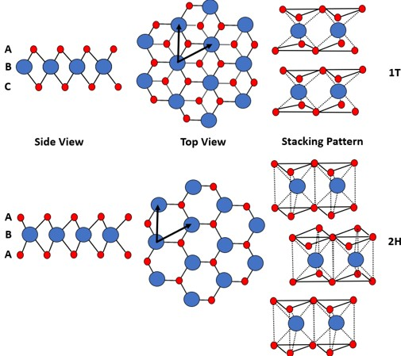
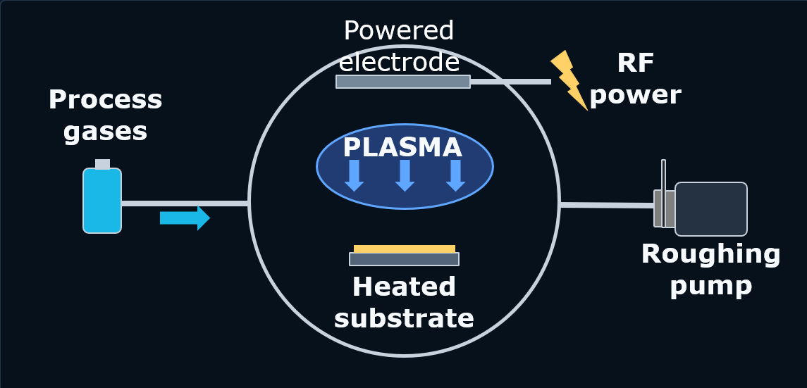
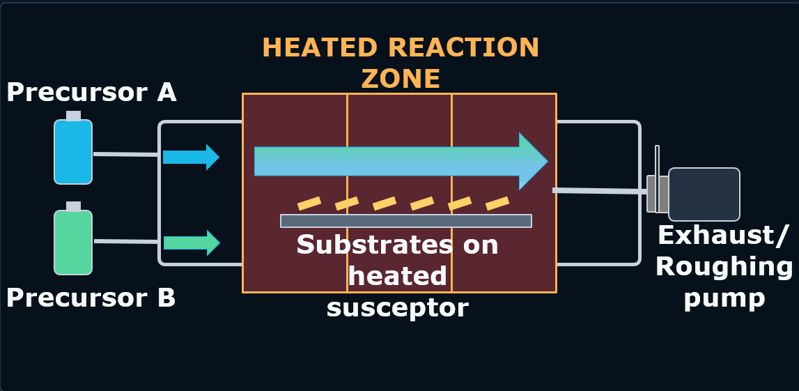
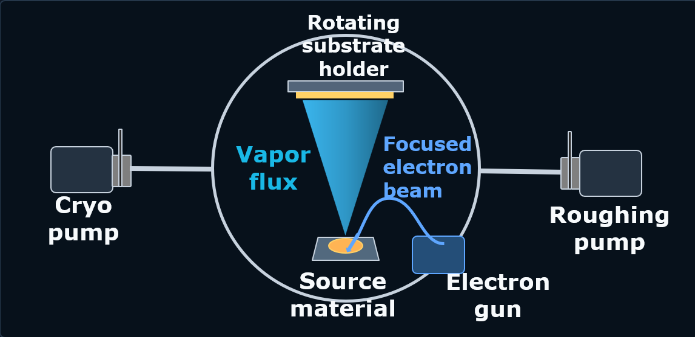
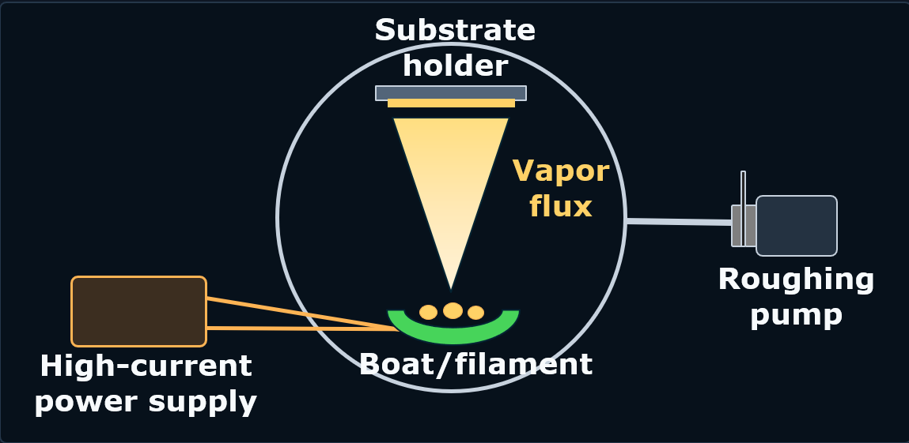
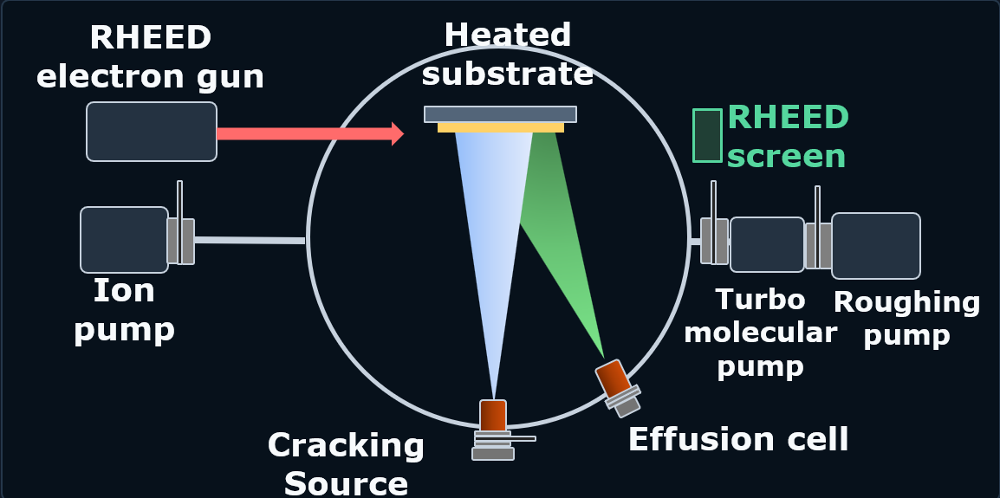
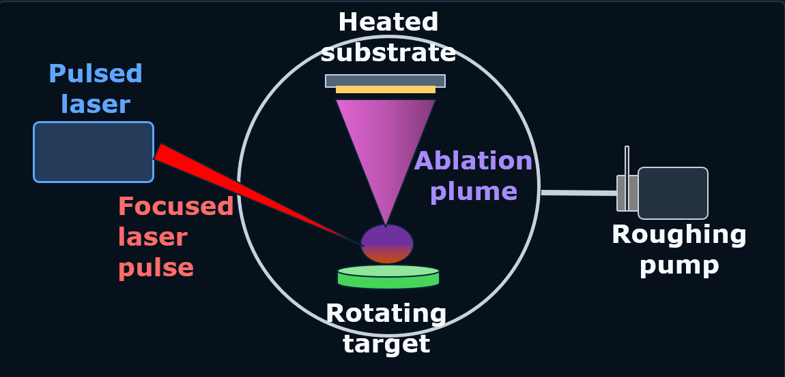
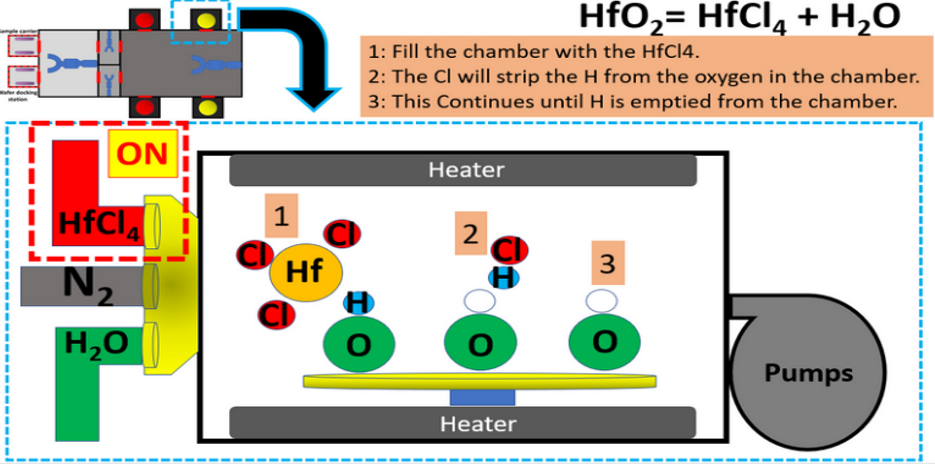
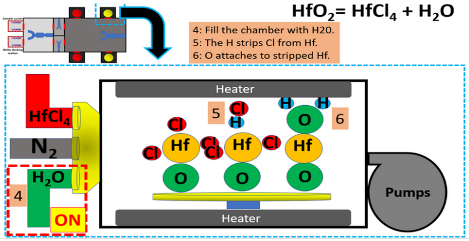
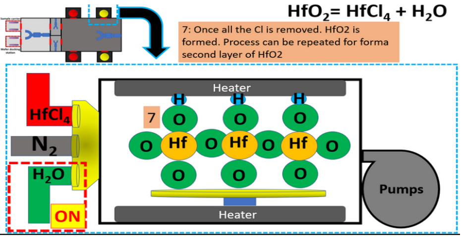

Thin-Film Deposition, Vacuum Systems & Process Engineering
Hands-on thin-film deposition and process experience dating to 2008
across semiconductor manufacturing, optical coatings, nanotechnology,
and advanced materials research.
My experience spans production deposition equipment through
ultra-high-vacuum research systems. It combines process development,
equipment installation and ownership, vacuum physics, characterization,
troubleshooting, qualification, and manufacturing support. This depth
helps me evaluate not only whether a process can produce a film, but
whether the equipment, controls, metrology, maintenance strategy, and
operating discipline can produce it repeatedly.

Manufacturing Process Ownership
Deposition recipes, qualification, production support, troubleshooting,
operator controls, preventive maintenance, and sustained performance.
Vacuum & Equipment Systems
Practical experience across manufacturing vacuum systems, high vacuum,
and research systems operating in ultra-high-vacuum regimes.
Cross-Platform Technical Depth
ALD, PECVD, conventional CVD, e-beam evaporation, thermal evaporation,
sputtering, MBE, and PLD across production and research environments.
Selected Deposition Scope
Since 2008
Thin-film processing across nanotechnology research, semiconductor manufacturing, optical coatings, and advanced materials.
10⁻³ to 10⁻¹¹ Torr
Experience spanning manufacturing-vacuum processes through ultra-high-vacuum research environments.
Process + Equipment
Recipe development, installation, chamber condition, qualification, troubleshooting, characterization, and sustainment.
Professional Thin-Film & Deposition Experience
My deposition work extends beyond operating equipment. It includes
understanding the film requirement, selecting and adjusting the process,
qualifying the result, restoring unstable tools, and building the controls
needed for repeatable manufacturing.
Atomic Layer Deposition process ownership in high-volume semiconductor manufacturing
Optical thin-film deposition, design support, and production process development
PECVD durable-coating process development and sustainment
E-beam evaporation, thermal evaporation, sputtering, CVD, MBE, and PLD
Deposition recipe development, optimization, and qualification
Film characterization and process-performance evaluation
Tool installation, qualification, troubleshooting, maintenance, and upgrades
Production work instructions and operator technical support
Process Development & Production Sustainment
A successful thin-film process must connect material requirements with
equipment behavior, measurement capability, and production controls.
Improving only the recipe is not enough when defects are being introduced
by tooling, chamber condition, handling, cleaning, metrology, maintenance,
or acceptance criteria.
Translate film and product requirements into practical deposition controls
Establish pressure, temperature, power, gas-flow, rate, and timing conditions
Run engineering trials and characterize deposited films
Adjust process parameters based on measured results
Evaluate chamber condition, process repeatability, and failure mechanisms
Qualify processes and equipment for manufacturing use
Investigate process excursions and equipment abnormalities
Support chamber recovery following maintenance
Create production instructions, inspection steps, and operating controls
Equipment Installation, Setup & Troubleshooting
During the transition of graduate-research laboratory space, I assisted
with equipment deinstallation and preparation for shipment to another
university. I then helped establish the new experimental laboratory by
installing and setting up equipment in the newly available space.
The completed laboratory supported ultrathin-material and monolayer
research. Before graduating, I also performed the hands-on installation
of a separate shared departmental MBE chamber with equipment-vendor
support. I prepared that system for future departmental use but did not
use the separate system for experiments.
Laboratory-equipment deinstallation and shipment preparation
Installation and setup of new experimental-laboratory equipment
Vacuum-system assembly and operational preparation
Departmental MBE installation with equipment-vendor support
Equipment startup, maintenance, and troubleshooting
Diagnosis of vacuum, temperature, pumping, and process issues
Connection of equipment behavior to experimental and production performance
Vacuum Systems & Thin-Film Process Physics
My deposition experience spans pressure regimes from manufacturing
vacuum equipment through ultra-high-vacuum research systems. Working
across these regimes developed a practical understanding of how chamber
condition, residual gases, pumping behavior, temperature, materials, and
pressure influence both equipment performance and film growth.
Vacuum Pumping Systems
My hands-on vacuum experience includes the major pumping approaches used
to move a chamber from atmosphere into rough, high, and ultra-high vacuum.
Initial Pump-Down
Roughing Pump
Removes the initial gas load from atmosphere and commonly provides the backing pressure required by a turbomolecular pump.
High Vacuum
Turbomolecular Pump
Uses high-speed rotor and stator stages to transfer gas molecules toward the backing pump and generate high vacuum.
Ultra-High Vacuum
Ion Pump
Ionizes and captures residual gas after the chamber is already under high vacuum, supporting clean ultra-high-vacuum operation.
Gas Capture
Cryogenic Pump
Condenses or adsorbs gases on cooled surfaces, providing high pumping speed with gas-dependent performance and periodic regeneration.
Actual pump combinations depend on chamber design, gas load, cleanliness,
target pressure, and process requirements. These methods are not one
mandatory sequence for every deposition system.
Vacuum, high-vacuum, and ultra-high-vacuum environments
Experience across approximately 10⁻³ to 10⁻¹¹ Torr depending on the process and operating state
Rate-of-rise testing and chamber-integrity evaluation
Distinguishing true leaks from outgassing and residual contamination
Gas purity and controlled-reactant delivery
Pumping behavior and chamber recovery
Temperature behavior under reduced-pressure conditions
Controlled heating, cooling, pump-down, and venting
Effects of chamber cleanliness on process stability and film quality
Selected Deposition Technologies
These methods do not compete on only one axis. The correct choice depends
on the material system, temperature limit, substrate geometry, film
thickness, required interface control, deposition rate, production volume,
and cost of ownership. The summaries below explain what each method does,
what it is good at, and where industry commonly applies it.
Plasma-Enhanced CVD (PECVD)

How it works: RF power creates a plasma that breaks
precursor gases into reactive species. Those species react at the
substrate and form a solid film while volatile by-products are pumped away.
Why industry uses it: Plasma energy enables lower
substrate temperatures than conventional thermal CVD while supporting
useful deposition rates and control of film stress, refractive index,
and composition. Common applications include silicon oxide, silicon
nitride, passivation, dielectric layers, hard masks, optical films,
amorphous silicon, and carbon-based durable coatings.
Engineering tradeoff: Plasma power, frequency, gas
ratio, pressure, temperature, electrode spacing, and chamber condition
can affect stress, density, defects, and possible plasma damage.
Experience context: Production-oriented optical-coating
work spanning process development, qualification, troubleshooting,
maintenance controls, work instructions, and sustainment.
Conventional Chemical Vapor Deposition (CVD)

How it works: Gaseous precursors flow over a heated
substrate, where thermal decomposition or chemical reaction produces
a solid film. Reaction by-products remain volatile and are removed by
the vacuum and exhaust system.
Why industry uses it: CVD can provide uniform films,
good step coverage, scalable batch or continuous processing, and high
throughput. It is widely used for semiconductor layers, protective and
hard coatings, silicon-based films, carbon materials, and compound films.
Engineering tradeoff: Conventional CVD often requires
more substrate heat than PECVD. Precursor delivery, gas-phase reactions,
by-product control, safety systems, and thermal compatibility can limit
the process window.
Experience context: CVD growth of carbon-based
nanomaterials followed by microfabrication and electrical device testing.
Electron-Beam Evaporation

How it works: A focused electron beam locally heats
source material in a water-cooled hearth until it evaporates. The vapor
travels through high vacuum and condenses on the substrate.
Why industry uses it: Localized heating allows many
high-melting-point metals and dielectric materials to be deposited with
relatively high purity and useful rates. Common applications include
optical coating stacks, metallization, lift-off structures, and research
or specialty thin films.
Engineering tradeoff: It is largely line-of-sight, so
step coverage on complex geometry is limited. Source conditioning,
spitting, beam stability, thickness monitoring, and material compatibility
must be controlled.
Experience context: Optical and thin-film manufacturing
work connecting recipe conditions with metrology, qualification,
equipment health, and production performance.
Thermal Evaporation

How it works: Electrical resistance heats a boat,
basket, filament, or crucible that contains the source material. Once
the material reaches sufficient vapor pressure, it evaporates and
condenses on the substrate.
Why industry uses it: Thermal evaporation is comparatively
simple, economical, and capable of useful deposition rates for compatible
metals, organics, and other lower-vaporization-temperature materials.
Typical uses include metal contacts, electrodes, optical layers, and
research-device fabrication.
Engineering tradeoff: It is line-of-sight and less suitable
for many refractory materials. Source-container reactions, temperature
control, contamination, and nonuniform coverage can limit performance.
How it works: A plasma accelerates ions toward a solid
target. Momentum transfer ejects target atoms, which travel through the
chamber and form a film on the substrate.
Why industry uses it: Sputtering can produce dense,
adherent films with strong thickness uniformity and good control of
metals, alloys, oxides, nitrides, and other compounds. It is common in
semiconductor metallization, optical coatings, displays, magnetic media,
wear coatings, and transparent conductive films.
Engineering tradeoff: Deposition can be slower than
evaporation. Plasma conditions can introduce stress, heating, charging,
or damage, and reactive sputtering requires careful control to prevent
target poisoning and process drift.
Experience context: Optical and general thin-film
manufacturing applications involving process optimization, equipment
behavior, and film-performance evaluation.
Molecular Beam Epitaxy (MBE)

How it works: Heated sources create directed atomic or
molecular beams that reach a heated crystalline substrate under
ultra-high vacuum. Independent shutters and calibrated source fluxes
provide precise control of composition, thickness, and interfaces.
Why industry and research use it: MBE offers exceptional
epitaxial quality, interface control, and access to in-situ diagnostics.
It is used for III-V semiconductors, quantum structures, advanced oxides,
two-dimensional materials, and specialty optoelectronic or electronic devices.
Engineering tradeoff: MBE requires complex ultra-high-
vacuum hardware, disciplined source and chamber management, and relatively
slow growth. Specialized production exists, especially for compound
semiconductors, but cost and throughput limit broad high-volume use.
Experience context: Ultra-thin and monolayer materials
research, source-flux and substrate-condition control, vacuum-system
maintenance, and installation of a separate shared MBE system.
Pulsed Laser Deposition (PLD)

How it works: Short, high-energy laser pulses ablate a
solid target and create a plasma plume. Material from the plume travels
to a heated substrate and condenses into a film under vacuum or a
controlled reactive atmosphere.
Why research and specialty production use it: PLD can
transfer complex multi-element compositions effectively and allows rapid
switching among targets. It is widely used for complex oxides,
ferroelectrics, superconductors, magnetic materials, multilayers, and
materials-discovery work.
Engineering tradeoff: Particulates, plume geometry,
target condition, laser fluence, and limited uniform area can complicate
scale-up. It is especially powerful for development and specialty films,
but is less common than sputtering or CVD for large-area production.
Experience context: Oxide thin-film research connecting
deposition conditions with structural and material characterization.
How the Techniques Compare
No deposition method is universally better. The engineering decision is to
select the mechanism whose strengths match the film, substrate, geometry,
rate, interface, and production requirements.
Technique
Growth mechanism
Primary strength
Main tradeoff
Common applications
PECVD
Plasma-assisted gas-phase and surface chemistry
Lower-temperature chemical deposition with useful rate and film-property control
Plasma effects, stress, chemistry, and chamber condition must be controlled
Dielectrics, passivation, hard masks, optical films, durable coatings
CVD
Thermally driven precursor reaction at the substrate
Uniform, scalable, and often conformal deposition
Higher temperature and demanding precursor, exhaust, and safety controls
Semiconductors, hard coatings, silicon compounds, carbon materials
ALD
Sequential self-limiting surface reactions
Atomic-scale thickness control and exceptional conformality
Slow cycle-based growth and demanding precursor management
Rapid development of complex-composition and multilayer films
Particulates, area uniformity, plume control, and scale-up
Complex oxides, ferroelectrics, superconductors, research and specialty films
Atomic Layer Deposition (ALD)
My industrial semiconductor experience includes ALD process engineering
and tool ownership. ALD uses alternating precursor exposures separated by
purge steps. Each surface reaction is self-limiting, which enables precise
thickness control and highly conformal films on three-dimensional features.
Industry uses ALD for high-k dielectrics, diffusion barriers, seed layers,
passivation, and other nanoscale films where uniformity and interface control
matter more than maximum deposition rate. Its principal tradeoff is slow,
cycle-based growth combined with demanding precursor delivery, purge, and
chamber-condition requirements.
The sequence below illustrates a conceptual HfO₂ cycle using alternating
precursor exposures and purge steps.
1 — First Precursor Exposure

The first precursor reacts with available surface sites until the
surface reaction reaches saturation. Excess precursor and reaction
products are then removed through the purge step.
2 — Second Precursor Exposure

After purging, the second precursor reacts with the modified surface
and completes the second half-reaction.
3 — Surface-Reaction Cycle Completion

Repeating the exposure-and-purge sequence builds film thickness through
controlled, self-limiting surface reactions.
Research & Advanced Thin-Film Experience
My research background extended thin-film experience into materials,
pressure regimes, and growth methods beyond typical production environments.
MBE growth of ultrathin and monolayer materials
Ultra-high-vacuum surface preparation and deposition
PLD growth of oxide materials
CVD growth of carbon nanotubes and graphene-related materials
Thermal evaporation of metallic electrodes
Experimental process development and parameter optimization
Thin-film and material characterization
The installation and equipment work enabled thin-film experiments that
contributed to graduate publications, including work published in Nature
Nanotechnology. The research page covers the scientific results and
publication impact in greater detail.
Deposition Across Semiconductor & Optical Manufacturing
My deposition experience spans applications where the underlying thin-film
physics is shared, but the materials, equipment, process controls, and
performance requirements differ substantially. That range supports technical
direction because it makes it easier to separate universal process principles
from equipment-specific habits.
This page focuses on deposition methods and equipment. The semiconductor and
optical pages cover the manufacturing applications, organizational leadership,
and product requirements without repeating them here.